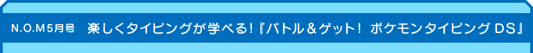
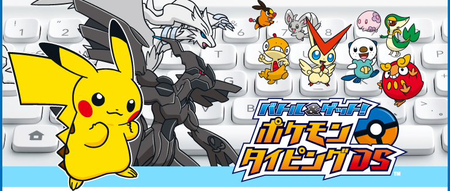
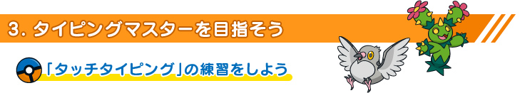
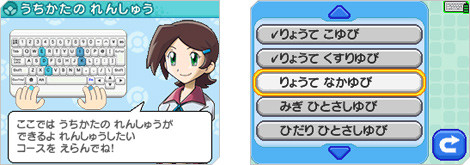
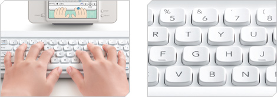
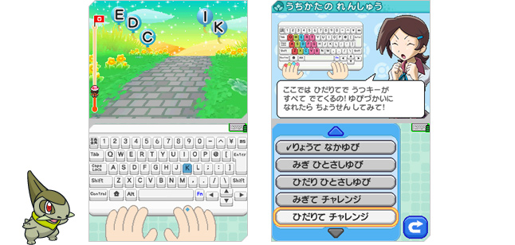
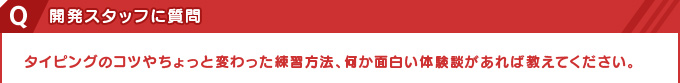

タイピングの技術で最も高度なものといえば、いわゆる「タッチタイピング」です。タッチタイピングとは、キーボードの刻印や手元を一切見ることなく画面だけを見て、両手を使って入力するという方法です。
『バトル＆ゲット！ ポケモンタイピングDS』でコースをクリアしたり、ハイスコアを目指してくり返し遊んでいると、特に意識しなくてもタイピングの速度はだんだん上がってきます。これだけでも日常的なタイピングには十分な技術がつきますし、ゲームも十分に楽しめます。しかし、もっともっと上を目指して、タッチタイピングができるようになるには、もう少し特殊な練習が必要です。
実は『バトル＆ゲット！ ポケモンタイピングDS』には、そんなタッチタイピングに必要な技術を学べるコースも用意されています。それは、キーボードの左のシフトキーに割り当てられている「シフトトレーニング」のコースです。

「シフトトレーニング」では、タッチタイピングで最も重要な「ホームポジション」を体で覚えることに重点が置かれています。ホームポジションとは、キーボードの「F」と「J」のキーの上に人差し指を置くことを言います。
一般的なキーボードの「F」と「J」のキーには、ほかのキーにはない小さな出っ張りのようなものがついています。これは、キーボードを見なくても、指先の感覚でホームポジションを把握するためのものです。もちろん「ニンテンドー ワイヤレスキーボード」の「F」と「J」のキーにもしっかりついています。

キーボードの上に手を置くとき、常にこのホームポジションを保つようにすると、手の位置をほとんど動かさず、すべてのキーを最小限の指の動きで打ちこむことができます。しかし、指やキーボードの配置の関係上、どの指でどのキーを押すのか決まってくるので、それぞれの指の動きとキーボードの配置を体得する必要があるのです。
「シフトトレーニング」では、右手と左手の人差し指から小指までの8本の指（※）それぞれについて、ホームポジションのままキーを打つ練習ができます。ここでくり返し練習して、ほかのコースのポケモンを調査するときにもホームポジションを意識するようにしてみましょう。次第に手元やキーボードを見る回数が減っていくはずです。
※
タッチタイピングでは、親指はスペースキーを押すのに使います。

タッチタイピングができるようになると、視線がキーボードと画面を行き来する時間を短縮でき、ホームポジションの効果もあいまって、タイピング自体の速度も飛躍的に上がります。もちろん、ゲームだけでなく、パソコンで作業をするようなときにも、タッチタイピングの技術はそのまま使えます。
『バトル＆ゲット！ ポケモンタイピングDS』は、キーボードにさわったこともないような小さなお子さまから、上級者を目指す大人のタイピング練習まで、幅広く配慮して作られています。
特に「Fn（ファンクション）」キーに割り当てられている「ローマじファンクション」のコースでは、日本語のかな文字をローマ字から変換して打ちこむ、いわゆる「ローマ字入力」のトレーニングができます。また、取扱説明書の裏にはローマ字表もついているので、ローマ字がはじめてのお子さまでも安心です。
ちなみに、かな文字で同じ言葉を入力するのに、複数の入力方式が使えることがあります。たとえば「PIKATYUU」と「PIKACHUU」と「PIKATIXYUU」は、どれも「ピカチュウ」になります。
『バトル＆ゲット！ ポケモンタイピングDS』では、ピカチュウの初回登場時には「PIKATYUU」と表示されますが、どの方式で入力しても認識されます。また次回登場時には、自分が使った方式でローマ字表記されるようになります。つまり、新たに覚え直す必要はなく、普段から使っているローマ字入力方式そのままでOKです。

このゲームを長時間プレイしたテスターさんから聞いた面白い体験談としては、タイピングの上達もさることながら、圧倒的にポケモンに詳しくなった、というお話がありました。

ローマ字表とキーボードを見ながら人差し指1本で入力するところから、両手をフルに使ったタッチタイピングまで、『バトル＆ゲット！ ポケモンタイピングDS』は、まさに初心者から上級者まで幅広く楽しめるソフトです。
みなさんも自分のペースで楽しみながら、ポケモンとタイピングのマスター（達人）を目指してみてはいかがでしょうか。